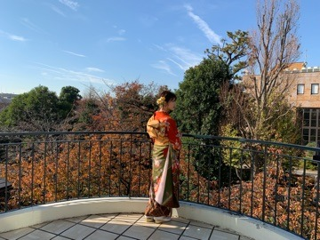

2018/1231Mon年末のバタバタ感嫌いじゃない
年末です！
2018年も終わりです！
伊藤純奈です！
まずお知らせ！
週間プレイボーイ発売中です！
今年も1年間舞台を
はじめとして、色々な
活動をさせて頂きました！
主演をさせて頂いたのが
1番大きかったかなあ。
あと大事なメンバー達の
卒業も大きいです！
それぞれのところで活動してる
のがみれてほんとにほんとに
うれしい☺︎
乃木坂46としてもまた
大きいグループになったと
思います。
レコード大賞を今年も
頂けたこと、グループの
一員としてとても光栄です！
そしてまた紅白歌合戦に今年も
出演させて頂きます！幸せだ〜
みなさんおたのしみに(〃ω〃)
今年も本当にみなさんに
たくさん支えて頂きました。
たくさんの感謝を！！
ありがとうございます！！！
来年もよろしくお願いします〜！！
それでは！
2018/1228Fri上に乗ってるのだーれだ
こんばんは！
伊藤純奈です！

先日の大阪全握休んでしまって
ごめんなさい(´；ω；`)
アンダラが終わってから、
体調を崩してしまっていました。。
年内最後の握手だったのに〜
みなさんに会えなくて残念です...。
遅くなりましたが、
アンダーライブ無事終了
いたしました！！
来てくださったみなさま本当に
ありがとうございました☺︎☺︎☺︎

まずは！日奈子センター
おつかれさまでした♡
頼もしい背中でした！
今回は日常を含めた5曲を
バキバキに踊るブロックが
あったんだけど、メンバー
みんなが１つになれた感じが
して気持ちよかった〜〜
達成感ってこれか〜〜
あとは、
かりんちゃんしおりと
私のために誰かのためにを
披露させて頂きました！
3人の声、相性がすごく
いいと思う〜我ながら〜！(笑)
メンバーからもファンの皆さんからも
ありがたいことにすごく好評で
嬉しい気持ちでいっぱいです☺︎

そして、
てぃーちゃんが乃木坂46として
最後の日でもありました！

泣きすぎて別人の顔になってる(笑)
なんで仲良くなったのか
覚えてないし、こんなにも
性格が合う人がいたなんて！って
思った記憶があるなあ。
思い出がたくさんある！
仲良くなれてほんとによかったし
てぃーちゃんがいなかったら
楽しくなかった！なんてことが
いっぱいいっぱいありました。
これからは、てぃーちゃんが
いたらもっと楽しかったのになあ
って思うことが増えるんだと思います。
始まる前までは実感がほんとに
わかなくて悲しいとか思わなかった
けどいざライブが始まると、
じわじわ実感してきてつらかったなあ。
ハルジオンを踊ってるてぃーちゃんが
可愛くて好きだし、ハルジオンを披露
する時は何故だか決まってポニーテール
なのもだいすき☺︎(笑)
てぃーちゃんはさっぱりと
した、生き生きとした顔で
卒業していきました！
卒業するメンバー、みんなそうです。
残されたメンバーはみんな
泣いてるけど、旅立つメンバーは
みんな泣かずに前を向いてるのが
かっこいいなあ...。
自分もそうなれるかなあ。
卒業したメンバーも
現役のみんなも、
応援しにきてくれました！
ライブ後にみんなの顔みると
安心するんだ〜(*ﾟ▽ﾟ*)
七色いんこで共演した
清水彩さん今村美歩さん
も観に来てくれました！
うれしかった〜♡
サイリウム、タオル、うちわ
ぜんぶありがとうございました☺︎
このライブに関わってくださった
みなさんに感謝！！！！

それでは、
また年内に1回だけ
更新します〜！！
2018/1219Wedアンダラ今日からだよ〜舞台に出演させて頂くよ〜
「GIRLS REVUE」への
出演がきまりました！
ひなちま、あやね、あみちゃん
と久々に一緒です〜！！嬉しい！
七色いんこでご一緒した
悠未ひろさんとまたご一緒できて
うれしいです♡
歌とダンスが盛りだくさんの
ステージになっています！
普通の舞台とは全然違うかなあ☺︎
普段舞台を観に行かない方にも
ぜひ観ていただきたいです（＾ν＾）
1月10日〜27日 オルタナティブシアター
2月1日〜2日 サンケイホールブリーゼ
全25公演です！
大阪公演もあります！！
アフタートークもあるので
詳しくはこちらを↓
新年一発目の舞台です〜
頑張るぞ〜〜！！！
ということで、こんにちは！
伊藤純奈です！
先日の握手会はクリスマスに
1番近いということでサンタさん〜
寒かったねえ〜
お花いつもありがとう☺︎
あみちゃんがこの日をもって
乃木坂46を卒業しました！
本当にお疲れ様でした(*´ω`*)
でも最近は毎日稽古で一緒に
いるから悲しくなかったし、
なんだか不思議な気持ち〜〜！
女優としてのあみちゃんと
一緒にお仕事ができて本当に
うれしいです！これからも
よろしくお願いします☺︎☺︎☺︎
月刊ヤングマガジンさん
発売中です！新成人組で〜
あすかちゃんがいないけど〜

ステキな振袖！
そしてそして、
ついに今日から2日間！
アンダーライブです☺︎
みなさん楽しむ準備は
できてますか？(*´ω`*)
舞台の稽古と同時進行で
リハをしていたので大変
ではあったけどみんなに
助けられています！今もなお！
ちなみにサイリウムは
「水色✖️ピンク」だよ♡
怪我だけはしないように〜！
みんなで頑張ります！！
やる気がありまくってる！！
それでは会場でお会いしましょう！
あ、乃木坂ポリス
みてくれたかな？♡
2018/1206Thuだいじだいじ
こんばんは！
伊藤純奈です
先日、若月佑美さんの
卒業セレモニーがありました！
ご卒業おめでとうございます！！
今年は大好きな人の卒業が
続いてて、心がもたないなあ。
最初から最後までかっこいい
背中をたくさんみせてくれました。
ボーダーをみたいって言ってくれたこと、
低体温のキスをまた一緒に披露できた
こと。すごく幸せなプレゼントを
もらいました☺︎最後までもらって
ばかりだったからボーダーの時に
ピシッと決めてわかに見せたい！って
思ったのにやっぱり泣いてしまって
それだけが後悔です......。
まだ研究生だった時から
じゅん達2期生のことを気にかけて
くれていて、わかは細かいところを
たくさん褒めてくれました。
そんなところみてたの？！って
ところ。しっかり見ていてくれた
んだって嬉しかった記憶がある！
犬夜叉で共演してから、すごく
距離が縮まってそこから仲良く
してもらってました(*´ω`*)
外の舞台が始めてだったじゅんに
1から教えてくれたのも舞台の、そして
お芝居の楽しさを教えてくれたのは
わかです！！！！わかがいなかったら
今じゅんは舞台にこんなに夢中に
なってなかったと思う〜。
いつも稽古場の端の方とか
はやめに来て1人で練習をしてたり、
周りからは真面目って言われてるけど
自分では「それが当たり前なんだよ」
って言ってる姿をみてあぁかっこいいな
こんな風になりたい！！って思いました！
憧れの対象でしかないのほんとに。
懐かしのやつ〜。
考えてる事が一緒だった事が
多かったり話してて心地よくて
顔をみると安心する存在だったから
頻繁に会えなくなるのが寂しいけど
またすぐご飯行こうね〜〜〜☺︎
いつか1人の女優さんになった
若月佑美さんと一緒にお仕事が
できますように.....！
まだ枯れないでね〜〜
大事にするからね〜
これからもずっと
大好きな人！！
改めて卒業おめでとうございます！
そして、明日12月7日
23:00〜25:00 「七色いんこ」
25:00〜27:20 「三人姉妹」
TBSチャンネル2で放送です！
坂道メンバーが出てる舞台が
24時間一挙放送なので
お見逃しなく！
8日はわか主演の鉄コン筋クリート
もあるから楽しみだ〜〜(*´ω`*)